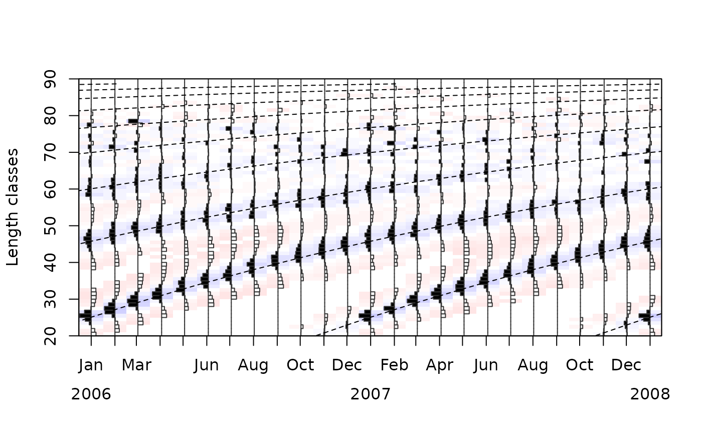

Convert FiSAT's starting point to t_anchor value
Source:R/startingPoint2tanchor.R
startingPoint2tanchor.RdStarting points returned or chosen within FiSAT are not supported
in TropFishR. Instead t_anchor takes on the job of anchoring VBGF growth curves on
a temporal axis. This function allows to convert FiSAT's starting points to t_anchor values
Arguments
- param
list with dates, midLengths, and catch
- par
list with growth parameters 'Linf' and 'K' of VBGF
- startingLength
starting length as returned by FiSAT, indicating the length within the starting sample cut by a growth curve
- startingSample
starting sample as returned by FiSAT, indicating the sample which is cut by a growth curve
Examples
data(synLFQ5)
lfqNEW <- startingPoint2tanchor(synLFQ5, par = list(Linf = 92, K = 0.37),
startingLength = 31, startingSample = 4)
lfqRest <- lfqRestructure(lfqNEW, MA = 11)
plot(lfqRest,par=list(Linf=lfqRest$Linf,K=lfqRest$K,t_anchor=lfqRest$t_anchor))
